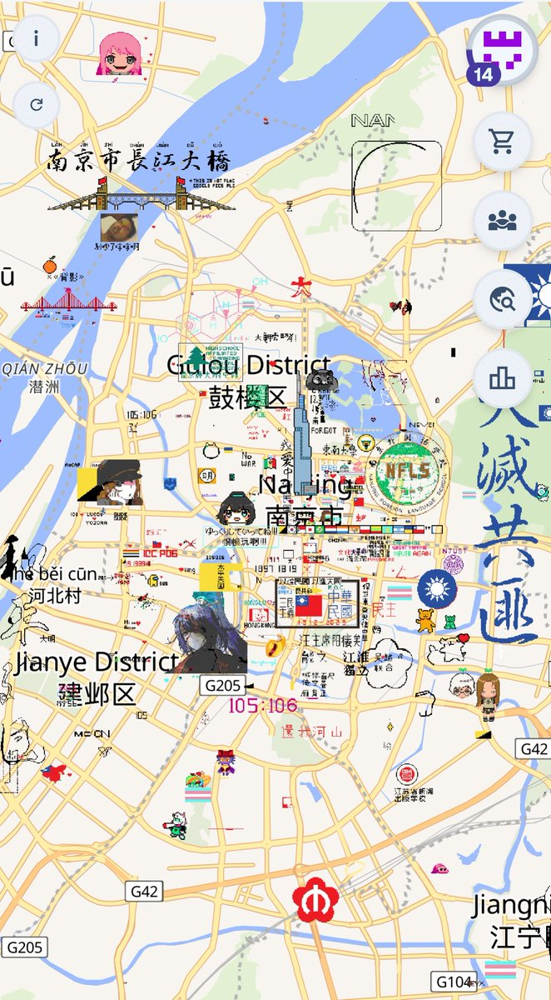

𝐀𝐬𝐡𝐥𝐞𝐲 𝐁𝐥𝐨𝐜𝐤🍥🌹🇹🇼🏳️⚧️
@bolckAshley
@Rain_Antar1121 @shushuyun321 @Ethanwu1234 中山陵上有我的畫作😉
第一張照片裡左下角的🏳️⚧️我也有幫忙

Rain Antares🏳️⚧️🍥
@Rain_Antar1121
下午好，南京～
越来越热闹了呢⩌⩊⩌
展示一下咱昨晚画的两千五百米长的雌二醇分子喵🍥૮₍♡>𖥦<₎ა
感谢@shushuyun321的创意协助和@Ethanwu1234的绘画协助～❤️
话说城里都有八面🏳️⚧️旗了呢…真的有这么多同类啊🥹
接下来想在南京画只小鸟游六花～有人陪咱画喵～(*ෆ´ ˘ `ෆ*)♡
https://t.co/cBujC2C3w3 https://t.co/5fJvNoPEd4